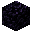
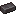
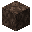
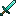
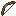

O feixe precisa subir sem um bloco opaco no caminho. Vidro e vidro tingido deixam a luz passar.
 Poder permanente para a sua base
Poder permanente para a sua base
O Beacon
Da Estrela do Nether ao feixe no céu: veja quantos blocos usar, quais materiais funcionam e como ativar cada benefício.
Tudo sobre Beacon, sem pular nenhuma etapa
Do zero ao feixe
O Beacon precisa de uma receita rara, uma pirâmide sólida e visão livre para o céu. Depois disso, um único item ativa o poder escolhido.
- 1
Derrote o Wither
Ele sempre entrega a Estrela do Nether necessária para o Beacon.
- 2
Fabrique o Beacon
Use 5 vidros, 3 obsidianas e 1 Estrela do Nether.
- 3
Monte a pirâmide
Faça de 1 a 4 camadas completas com blocos minerais válidos.
- 4

Escolha o poder
Pague 1 item aceito, selecione o efeito e confirme no botão verde.
Receita na bancada
1 Beacon
O vidro fica na linha de cima e nos cantos do meio; a Estrela do Nether vai no centro e a obsidiana fecha a linha de baixo.
- 5 blocos de vidro
- 1 Estrela do Nether

3 blocos de obsidiana
Não pode faltar nenhum bloco em uma camada. O Beacon fica no centro, um bloco acima do quadrado 3×3.
Ferro, ouro, esmeralda, diamante e netherite podem aparecer juntos em qualquer posição.
O pagamento serve para confirmar a configuração. O Beacon não consome itens enquanto permanece ligado.
Calculadora da pirâmide
Escolha o nível. A calculadora mostra as camadas, os blocos, a quantidade de barras ou gemas, o alcance e os poderes liberados.
Pirâmide de nível 4
164blocos minerais
1.476barras ou gemas
50 blocosde alcance horizontal
17 segundosapós sair da área
Em stacks: 23 stacks + 4
A pirâmide completa: alcance máximo e a fileira secundária.
Este nível libera
| Nível | Camadas | Blocos | Barras/gemas | Alcance | Duração |
|---|---|---|---|---|---|
| 1 | 3×3 | 9 | 81 | 20 blocos | 11 s |
| 2 | 5×5 + 3×3 | 34 | 306 | 30 blocos | 13 s |
| 3 | 7×7 + 5×5 + 3×3 | 83 | 747 | 40 blocos | 15 s |
| 4 | 9×9 + 7×7 + 5×5 + 3×3 | 164 | 1.476 | 50 blocos | 17 s |
Todos os materiais válidos
Clique num material para aplicá-lo à calculadora. O tipo do bloco não muda o alcance, a duração ou os poderes — ele muda apenas o custo e a aparência.
Pode misturar. Uma mesma pirâmide pode combinar os cinco materiais, até dentro da mesma camada.
Poderes e benefícios
O nível da pirâmide decide quais opções aparecem. O efeito é reaplicado a cada poucos segundos enquanto o jogador estiver dentro da área.
Tela do Beacon
Como ativar cada benefício
- 1
Abra o Beacon depois que o feixe aparecer.
- 2
Coloque um pagamento: 1 barra de ferro, 1 barra de ouro, 1 esmeralda, 1 diamante ou 1 barra de netherite.
- 3
Escolha o poder primário. As opções dependem do nível da pirâmide.
- 4
No nível 4, escolha Regeneração I ou clique novamente no poder primário para torná-lo nível II.
- 5
Confirme no botão verde. Mudar a configuração depois pede outro item de pagamento.

Todos fazem a mesma coisa. Pagar com netherite não melhora o efeito.
Como conseguir a Estrela do Nether
Ela não aparece em baús e não pode ser fabricada. A única forma no modo sobrevivência é invocar e derrotar o Wither.
Consiga 3 crânios
Mate esqueletos Wither em Fortalezas do Nether. A chance base é 2,5%; Saque III eleva para 5,5% na Java Edition.
Abrir guia do Nether
Junte 4 blocos
Areia das almas ou terra das almas funcionam. Elas aparecem no Nether, especialmente no Vale de Areia das Almas.
☠☠☠
Monte o T
Faça um T com os quatro blocos e coloque os três crânios por último. Deixe espaço para o boss nascer.
Derrote o Wither
Leve bom equipamento, leite para remover o efeito Wither e poções. Ao morrer, ele deixa 1 Estrela do Nether.
Antes de invocar
Prepare a luta longe da sua base
O Wither explode ao nascer e destrói muitos blocos durante o combate. Na metade da vida, ele cria uma armadura e deixa de receber dano de flechas.

Espada forte para a segunda fase
Arco para a primeira fase- Leite contra o efeito Wither
- Poções de cura e regeneração
Feixe, cores e projetos avançados
Depois que o Beacon está funcionando, ainda dá para personalizar o feixe e combinar várias unidades na mesma base.
Mude a cor do feixe
Coloque vidro tingido ou painel de vidro tingido sobre o Beacon. Sobrepor cores cria novas tonalidades ao longo do feixe.
Compartilhe a pirâmide
Vários Beacons podem usar os mesmos blocos minerais. Uma base de nível 4 para 6 Beacons usa 244 blocos e consegue manter todos os seis efeitos.

Use Pressa II para minerar
O clássico projeto de mineração combina uma pirâmide completa, Pressa II e uma picareta com Eficiência V.
O Beacon também ilumina
Mesmo sem feixe ativo, o bloco emite nível de luz 15. Ele não pode ser empurrado nem puxado por pistões.
Se o Beacon não ligar, confira isto
- 01A pirâmide está inteira, sem buracos ou blocos inválidos?
- 02O Beacon está exatamente no centro da camada 3×3?
- 03Existe algum bloco opaco interrompendo o caminho até o céu?
- 04Você inseriu um item de pagamento, escolheu um poder e confirmou?
- 05O jogador está dentro do alcance e na mesma dimensão?